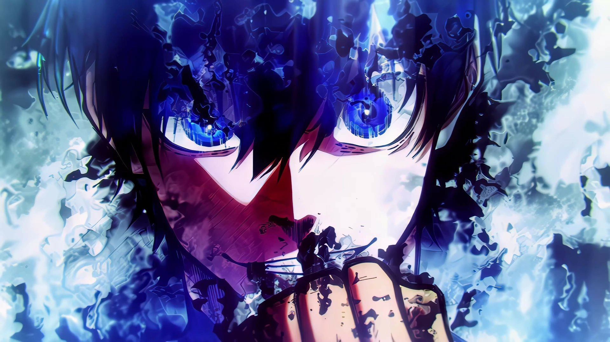
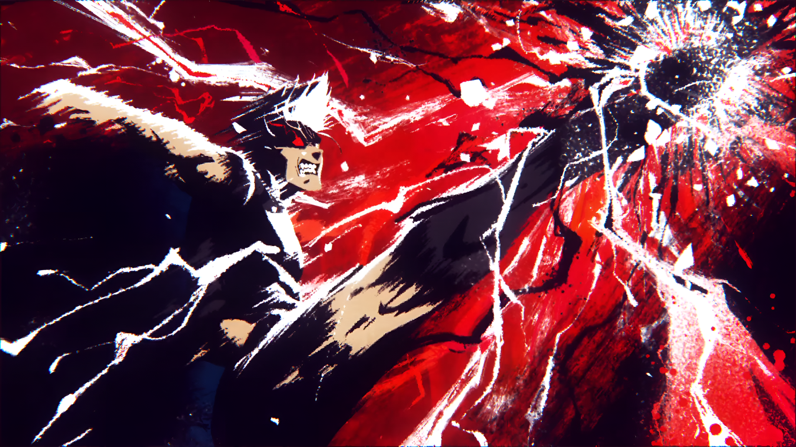
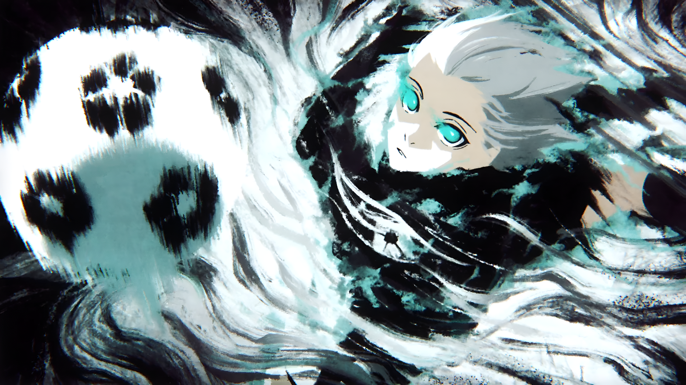
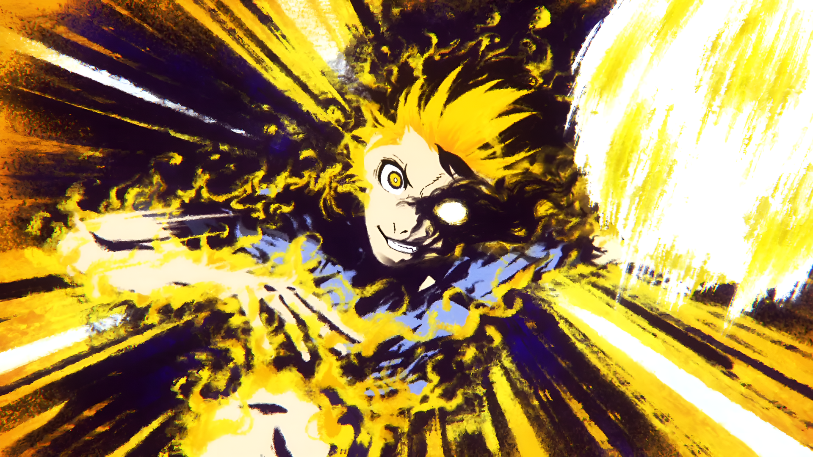
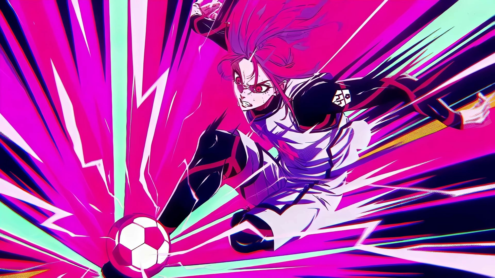

Yoichi Isagi
Atacante focado em espacialização e percepção de jogo. Sua arma principal é a visão tridimensional e o chute de primeira, buscando sempre a evolução no Blue Lock.
- Visão de Jogo98
- Chute de Primeira90
- Posicionamento95

Shoei Baro
O "Rei" do campo. Jogador físico e dominante, especialista em chutes de média distância na curvatura exata do ângulo da trave, além de um drible agressivo e imprevisível.
- Força Física96
- Chute de Curva94
- Agressividade99

Seishiro Nagi
Prodígio com controle de bola inacreditável. Capaz de dominar qualquer passe impossível com facilidade e criar finalizações geniais em frações de segundo.
- Domínio de Bola99
- Criatividade97
- Finalização93

Meguru Bachira
Driblador nato movido por seu "monstro" interior. Possui um estilo de jogo imprevisível, focado em dribles lisos, passes rápidos e pura diversão em campo.
- Drible98
- Agilidade95
- Passe91

Hyoma Chigiri
Conhecido como a "Pantera Redimida". Sua velocidade de corrida explosiva nas pontas supera a de qualquer outro jogador, permitindo cruzar o campo em segundos.
- Velocidade99
- Aceleração98
- Passe Curto88